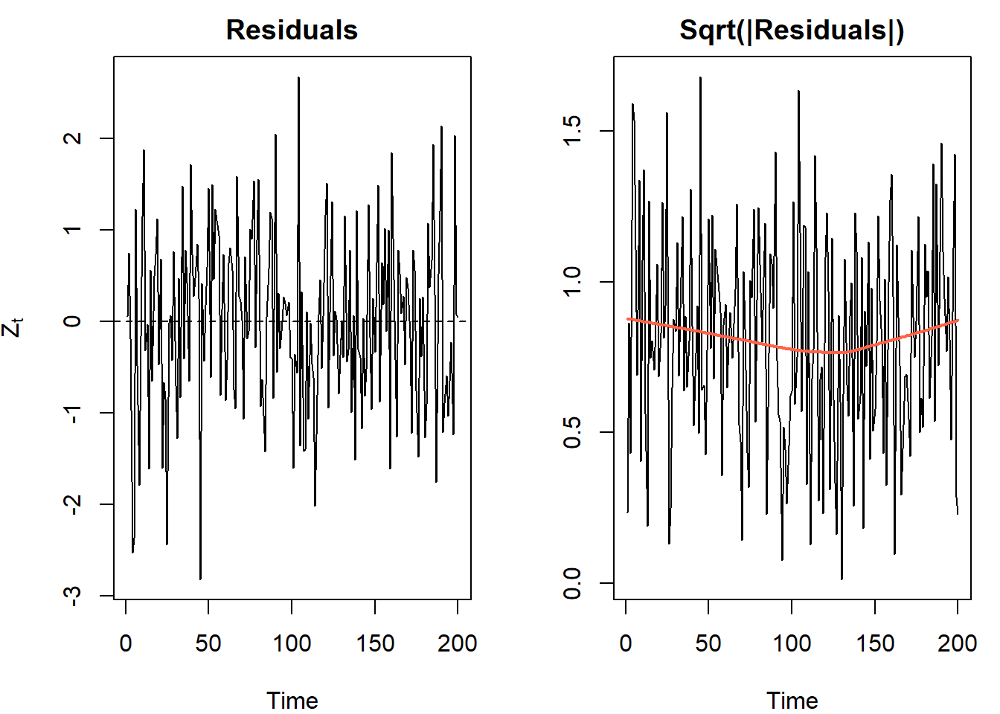
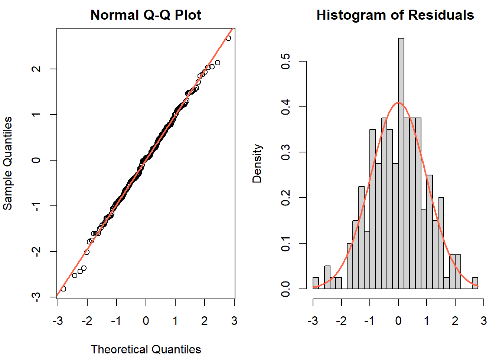
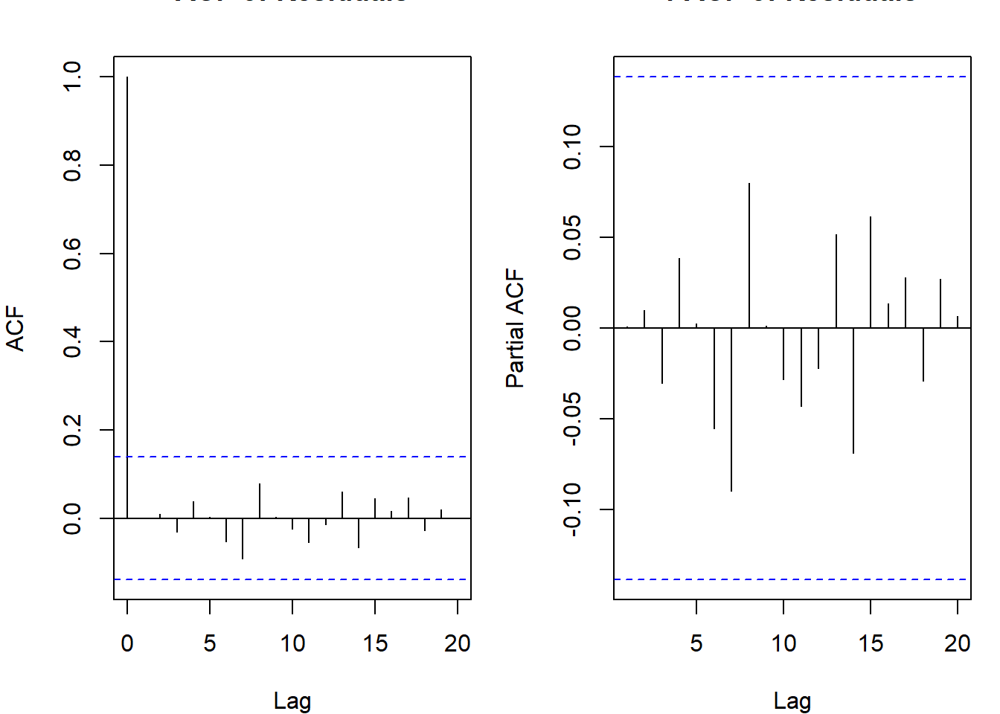
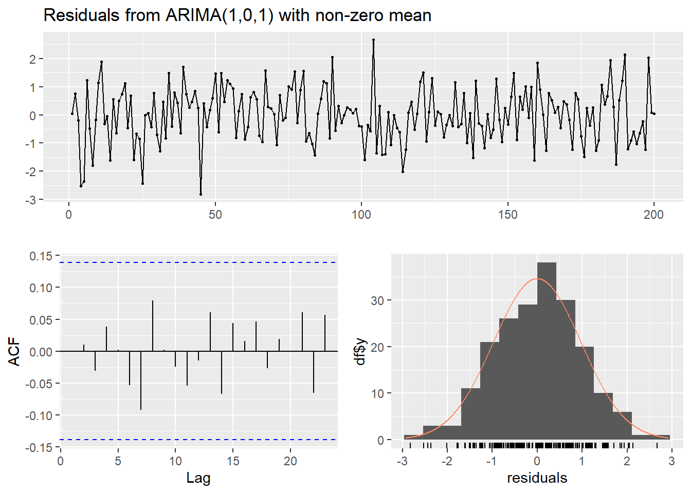
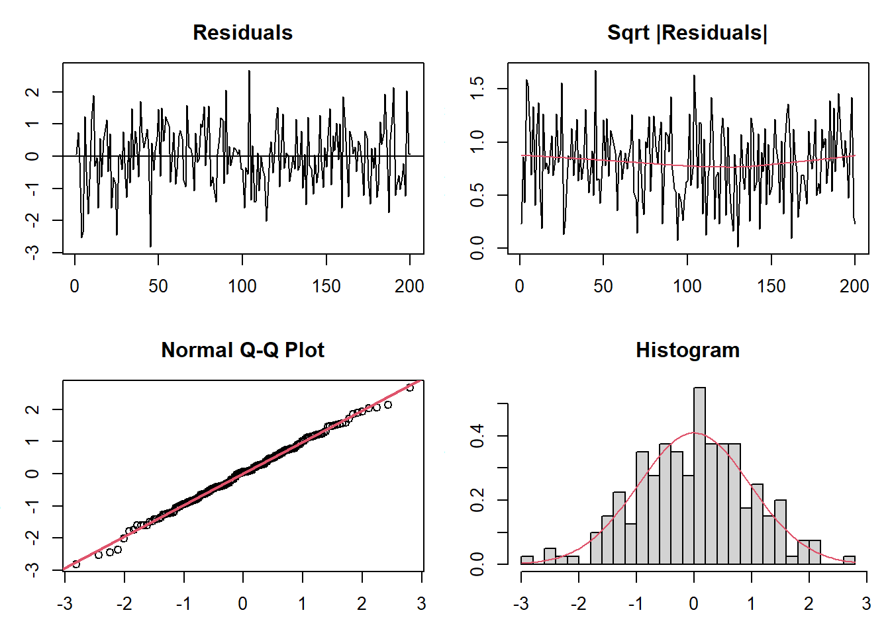
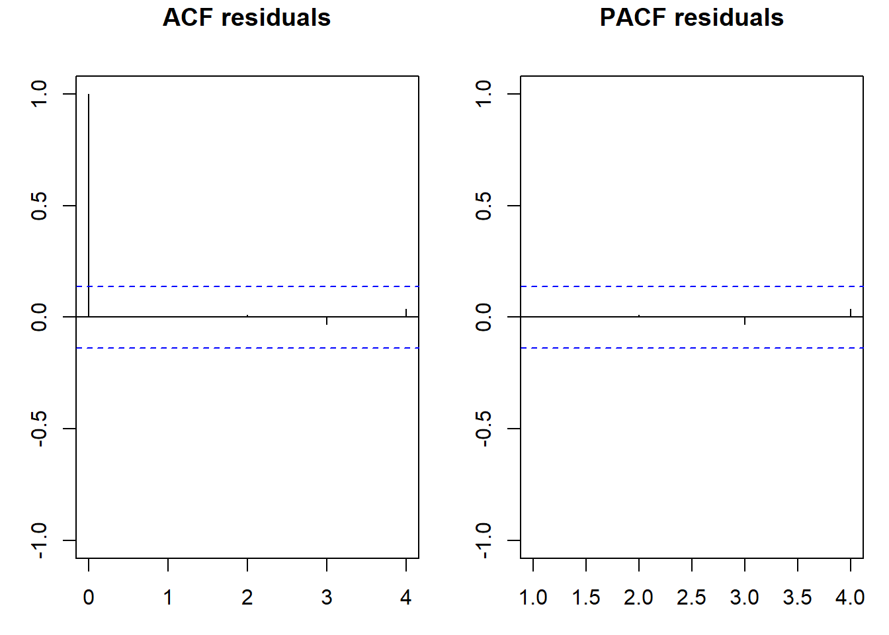

library(forecast) # Arima(), auto.arima(), checkresiduals(): model fitting and diagnostics
library(tseries) # jarque.bera.test(): Jarque-Bera normality test on residuals
library(nortest) # ad.test(): Anderson-Darling normality test
library(lmtest) # bptest(): Breusch-Pagan test for conditional heteroskedasticityEstimation, Validation & Selection
Fitting ARIMA models: MLE, information criteria, and residual diagnostics
Estimation
Given a stationary ARMA(p,q) model \(\Phi_p(B)X_t = \Theta_q(B)Z_t\), we need to estimate the parameter vector \(\boldsymbol{\alpha} = (\phi_1, \ldots, \phi_p, \theta_1, \ldots, \theta_q, \sigma_Z^2)\) from a single realization \(X_1, \ldots, X_T\).
Maximum Likelihood Estimation
The standard approach is maximum likelihood (ML). We need to write the joint likelihood of the observed data \(\mathbf{X} = (X_1, \ldots, X_T)'\).
For a Gaussian ARMA process, the joint density is:
\[f(\mathbf{X}; \boldsymbol{\alpha}) = (2\pi)^{-T/2} |\Sigma|^{-1/2} \exp\left(-\frac{1}{2} \mathbf{X}' \Sigma^{-1} \mathbf{X}\right)\]
where \(\Sigma = \sigma_Z^2 \Gamma\) is the \(T \times T\) autocovariance matrix with \(\Gamma_{ij} = \rho(|i-j|)\). The log-likelihood is:
\[\ell(\boldsymbol{\alpha}) = -\frac{T}{2}\log(2\pi\sigma_Z^2) - \frac{1}{2}\log|\Gamma| - \frac{1}{2\sigma_Z^2} \mathbf{X}' \Gamma^{-1} \mathbf{X}\]
Maximizing over \(\sigma_Z^2\) gives \(\hat{\sigma}_Z^2 = \frac{1}{T}\mathbf{X}'\Gamma^{-1}\mathbf{X}\), and the profile log-likelihood (concentrated over \(\sigma_Z^2\)) becomes:
\[\ell^*(\boldsymbol{\phi}, \boldsymbol{\theta}) = -\frac{T}{2}\log\left(\frac{S(\boldsymbol{\phi}, \boldsymbol{\theta})}{T}\right) - \frac{1}{2}\log|\Gamma|\]
where \(S(\boldsymbol{\phi}, \boldsymbol{\theta}) = \mathbf{X}'\Gamma^{-1}\mathbf{X}\) is the generalized sum of squares.
Two variants in practice:
Conditional MLE: conditions on the first \(\max(p,q)\) observations and sets initial innovations \(Z_0 = Z_{-1} = \cdots = 0\). This lets us write \(Z_t = X_t - \hat{X}_{t|t-1}\) using the one-step-ahead predictions and minimize \(S_c(\boldsymbol{\phi},\boldsymbol{\theta}) = \sum_{t=p+1}^T Z_t^2\) (this ignores the log-determinant term). Fast and easy to compute, but slightly biased in small samples.
Exact MLE: accounts for the distribution of the initial observations via the full \(\Sigma^{-1}\) and \(|\Sigma|\) terms. Better in small samples;
arima()in R uses this by default.
For large \(T\), conditional and exact MLE give nearly identical results.
library(forecast)
set.seed(42)
x <- arima.sim(model = list(ar = 0.6, ma = -0.3), n = 200)
# fit ARMA(1,1) by exact MLE
mod <- Arima(x, order = c(1, 0, 1))
summary(mod)Series: x
ARIMA(1,0,1) with non-zero mean
Coefficients:
ar1 ma1 mean
0.3876 -0.0956 -0.1358
s.e. 0.2050 0.2206 0.1013
sigma^2 = 0.9597: log likelihood = -278.21
AIC=564.42 AICc=564.62 BIC=577.61
Training set error measures:
ME RMSE MAE MPE MAPE MASE
Training set -0.0002012367 0.9722566 0.7759554 128.4995 180.2169 0.807923
ACF1
Training set 0.0008415691Yule-Walker Estimation for AR(p)
For pure AR models, Yule-Walker gives consistent (but inefficient) method-of-moments estimates. Replace population autocovariances with sample estimates:
\[\hat{R}_p \hat{\boldsymbol{\phi}} = \hat{\boldsymbol{\rho}}_p\]
where \(\hat{R}_p = [\hat{\rho}(|i-j|)]_{i,j=1}^p\) and \(\hat{\boldsymbol{\rho}}_p = (\hat{\rho}(1), \ldots, \hat{\rho}(p))'\). Solving:
\[\hat{\boldsymbol{\phi}} = \hat{R}_p^{-1} \hat{\boldsymbol{\rho}}_p\]
and then \(\hat{\sigma}_Z^2 = \hat{\gamma}(0)\left(1 - \hat{\boldsymbol{\rho}}_p' \hat{R}_p^{-1} \hat{\boldsymbol{\rho}}_p\right)\).
Yule-Walker always gives a stationary estimate (the estimated AR polynomial has all roots outside the unit circle, by construction). It is used for initial values in MLE optimization and for PACF computation.
ar_fit <- ar(x, method = "yule-walker")
cat("Estimated AR order:", ar_fit$order, "\n")Estimated AR order: 1 cat("Coefficients:", round(ar_fit$ar, 4), "\n")Coefficients: 0.302 Asymptotic Distribution
Under regularity conditions, for a causal and invertible ARMA:
\[\sqrt{T}(\hat{\boldsymbol{\alpha}} - \boldsymbol{\alpha}) \overset{d}{\to} N(\mathbf{0}, V(\boldsymbol{\alpha}))\]
where \(V(\boldsymbol{\alpha})\) is the asymptotic covariance matrix (inverse Fisher information). Standard errors reported by arima() are \(\sqrt{\hat{V}_{ii}/T}\). Use these for hypothesis tests and confidence intervals on the parameters.
Model Selection
After estimating several candidate models, we choose among them using information criteria that trade off goodness-of-fit against model complexity.
AIC and BIC
\[AIC = -2\ell(\hat{\boldsymbol{\alpha}}) + 2k\] \[BIC = -2\ell(\hat{\boldsymbol{\alpha}}) + k\log(T)\]
where \(k = p + q + 1\) (including \(\sigma_Z^2\)) is the number of free parameters. Lower is better.
AIC: derived from minimizing the expected Kullback-Leibler divergence between the fitted model and the true data-generating process. It penalizes each extra parameter by \(2\). Tends to overfit slightly in finite samples.
BIC: derived from the Bayesian posterior model probability. The penalty \(\log(T)\) grows with sample size, so BIC selects sparser models than AIC for moderate to large \(T\). BIC is consistent (selects the true model with probability \(\to 1\) if the true model is in the candidate set). AIC is not consistent, but BIC is not efficient.
AICc (corrected AIC): a finite-sample correction \(AICc = AIC + \frac{2k(k+1)}{T-k-1}\). Preferred when \(T/k < 40\).
The principle of parsimony: if two models have similar AIC/BIC, prefer the simpler one. Extra parameters always improve in-sample fit but can hurt out-of-sample performance.
models <- list(
"ARMA(1,0)" = Arima(x, order = c(1, 0, 0)),
"ARMA(0,1)" = Arima(x, order = c(0, 0, 1)),
"ARMA(1,1)" = Arima(x, order = c(1, 0, 1)),
"ARMA(2,1)" = Arima(x, order = c(2, 0, 1)),
"ARMA(1,2)" = Arima(x, order = c(1, 0, 2))
)
results <- sapply(models, function(m) c(AIC = AIC(m), BIC = BIC(m)))
print(round(t(results), 2)) AIC BIC
ARMA(1,0) 562.60 572.50
ARMA(0,1) 565.24 575.14
ARMA(1,1) 564.42 577.61
ARMA(2,1) 565.98 582.47
ARMA(1,2) 566.27 582.76Series: x
ARIMA(1,0,0) with zero mean
Coefficients:
ar1
0.3129
s.e. 0.0669
sigma^2 = 0.9599: log likelihood = -279.24
AIC=562.49 AICc=562.55 BIC=569.08
Training set error measures:
ME RMSE MAE MPE MAPE MASE
Training set -0.09382178 0.9772839 0.7803086 128.8771 174.9505 0.8124555
ACF1
Training set -0.02108469Validation
After selecting a model, check whether the residuals \(\hat{Z}_t = X_t - \hat{X}_{t|t-1}\) behave like white noise. Under correct specification:
\[Z_t \overset{iid}{\sim} N(0, \sigma_Z^2)\]
The validation checks three properties of the residuals.
1. Homogeneity of Variance
Residuals should have constant variance over time. If variance is not constant, a GARCH-type model for the conditional variance is needed (not captured by ARMA).
Diagnostics: - Time plot of residuals: look for volatility clustering or widening spread - Plot \(\sqrt{|\hat{Z}_t|}\) vs time with a lowess smooth: a flat line means homoscedasticity - Breusch-Pagan test: regress \(\hat{Z}_t^2\) on a set of variables (time, lagged squared residuals) and test joint significance
In R: lmtest::bptest(resid ~ I(fitted - resid)) tests for heteroskedasticity; the square root of absolute residuals plotted against time with lowess() gives the visual equivalent.

2. Normality
Residuals should be approximately Gaussian for MLE-based inference to be valid. Non-normality does not invalidate point estimates (MLE is still consistent under non-normality if the ACF structure is correct) but does affect prediction intervals.
Diagnostics: - Normal Q-Q plot: points should lie on the diagonal; heavy tails show up as bow-shaped deviations - Histogram vs normal density overlay - Shapiro-Wilk test (\(H_0\): residuals are normally distributed) - Jarque-Bera test: tests jointly for zero skewness and excess kurtosis equal to zero: \(JB = \frac{T}{6}\left[S^2 + \frac{(K-3)^2}{4}\right] \overset{H_0}{\sim} \chi^2(2)\) where \(S\) is skewness and \(K\) is kurtosis
In R: stats::shapiro.test(resid(mod)) for Shapiro-Wilk, tseries::jarque.bera.test(resid(mod)) for Jarque-Bera, and nortest::ad.test(resid(mod)) for Anderson-Darling.
par(mfrow = c(1, 2), mar = c(4, 4, 2, 1))
qqnorm(res, main = "Normal Q-Q Plot")
qqline(res, col = "tomato", lwd = 2)
hist(res, breaks = 20, probability = TRUE, main = "Histogram of Residuals", xlab = "")
curve(dnorm(x, mean = mean(res), sd = sd(res)), add = TRUE, col = "tomato", lwd = 2)
shapiro.test(res)
Shapiro-Wilk normality test
data: res
W = 0.99718, p-value = 0.97683. Independence (No Autocorrelation)
The residuals should be serially uncorrelated. Any remaining autocorrelation means the model has not captured all the linear dependence in the data.
Diagnostics: - ACF/PACF of residuals: all bars should lie within the \(\pm 1.96/\sqrt{T}\) bands - Ljung-Box test on residuals:
\[Q_{LB}(m) = T(T+2)\sum_{k=1}^{m} \frac{\hat{\rho}^2(k)}{T-k} \overset{H_0}{\sim} \chi^2(m - p - q)\]
The degrees of freedom are \(m - p - q\), not \(m\), because we estimated \(p + q\) parameters. A common choice is \(m = \min(2s, T/5)\) for seasonal data (with period \(s\)) or \(m = 10\) for non-seasonal data.
In R: stats::Box.test(resid(mod), lag = m, type = 'Ljung-Box', fitdf = p + q) where fitdf adjusts degrees of freedom for the estimated parameters. forecast::checkresiduals(mod) runs ACF + Ljung-Box + normality histogram together.
par(mfrow = c(1, 2), mar = c(4, 4, 2, 1))
acf(res, main = "ACF of Residuals", lag.max = 20)
pacf(res, main = "PACF of Residuals", lag.max = 20)
lags <- c(5, 10, 15, 20)
lb <- sapply(lags, function(m)
Box.test(res, lag = m, type = "Ljung-Box", fitdf = 2)$p.value)
data.frame(Lag = lags, p_value = round(lb, 4)) Lag p_value
1 5 0.9155
2 10 0.8271
3 15 0.8923
4 20 0.9793checkresiduals()
forecast::checkresiduals() combines all three diagnostics in one call:
checkresiduals(mod11)
Ljung-Box test
data: Residuals from ARIMA(1,0,1) with non-zero mean
Q* = 4.3211, df = 8, p-value = 0.8271
Model df: 2. Total lags used: 10If any check fails, revise the model. Add or remove AR/MA terms, reconsider the differencing order, or consider a GARCH model for the variance if homogeneity fails.
Model Comparison Table
When evaluating multiple candidate models, collect all fit statistics in a single data frame for easy comparison. The APB example shows the pattern: fit models with different orders, evaluate in-sample (AIC, BIC, \(\hat{\sigma}_Z\)) and out-of-sample (RMSE, MAE, MAPE) on a hold-out window.
set.seed(42)
x <- arima.sim(model = list(ar = 0.6, ma = -0.3), n = 200)
# fit three candidate models
m1 <- Arima(x, order = c(1, 0, 1))
m2 <- Arima(x, order = c(1, 0, 0))
m3 <- Arima(x, order = c(0, 0, 1))
resul <- data.frame(
Model = c("ARMA(1,1)", "AR(1)", "MA(1)"),
Params = c(length(coef(m1)), length(coef(m2)), length(coef(m3))),
SigmaZ = round(sqrt(c(m1$sigma2, m2$sigma2, m3$sigma2)), 4),
AIC = round(c(AIC(m1), AIC(m2), AIC(m3)), 2),
BIC = round(c(BIC(m1), BIC(m2), BIC(m3)), 2)
)
resul Model Params SigmaZ AIC BIC
1 ARMA(1,1) 3 0.9796 564.42 577.61
2 AR(1) 2 0.9776 562.60 572.50
3 MA(1) 2 0.9841 565.24 575.14Lower AIC/BIC and lower \(\hat{\sigma}_Z\) are better. When AIC and BIC disagree, prefer BIC for parsimony (its penalty \(\log T\) is stronger). For out-of-sample evaluation, use forecast::tsCV() (see the forecasting notes).
General Framework
%%{init: {'flowchart': {'htmlLabels': true}, 'themeVariables': {'edgeLabelBackground':'transparent'}}}%%
flowchart LR
N01[Identification] --> N02[Estimation]
N02 --> N03{Validation}
N04[Selection] --> N05(Forecasting)
N03 -- "<span style='display:block; transform: translateY(-15px);'>no</span>" --> N01
N03 -- "<span style='display:block; transform: translateY(-15px);'>yes</span>" --> N04[Selection]
click N01 href "../03/arima.html#sec-id" "Jump to Identification"
click N02 href "#sec-estimation" "Jump to Estimation"
click N03 href "#sec-validation" "Jump to Validation"
click N04 href "#sec-selection" "Jump to Selection"
click N05 href "../05/forecasting.html#sec-forecasting" "Jump to Forecasting"
class N01,N02,N03,N04,N05 nav-node
linkStyle 0 stroke:#0000FF,stroke-width:2px;
linkStyle 1 stroke:#0000FF,stroke-width:2px;
linkStyle 2 stroke:#0000FF,stroke-width:2px;
linkStyle 3 stroke:#FF0000,stroke-width:2px;
linkStyle 4 stroke:#00FF00,stroke-width:2px;
Appendix: Validation Function
The APB example uses a single validation() function that runs all diagnostic checks at once. The structure below replicates it in a cleaner form for any forecast::Arima object.
validate_arima <- function(mod, s = 1) {
res <- residuals(mod)
# --- plots ---
par(mfrow = c(2, 2), mar = c(3, 3, 3, 1))
plot(res, main = "Residuals"); abline(h = 0)
plot(sqrt(abs(res)), main = "Sqrt |Residuals|")
lines(lowess(sqrt(abs(res))), col = 2)
qqnorm(res); qqline(res, col = 2, lwd = 2)
hist(res, breaks = 20, freq = FALSE, main = "Histogram")
curve(dnorm(x, mean(res), sd(res)), col = 2, add = TRUE)
par(mfrow = c(1, 1))
# --- ACF of residuals ---
par(mfrow = c(1, 2))
acf(res, lag.max = 4 * s, ylim = c(-1, 1), main = "ACF residuals")
pacf(res, lag.max = 4 * s, ylim = c(-1, 1), main = "PACF residuals")
par(mfrow = c(1, 1))
# --- tests ---
cat("\n--- Normality ---\n")
print(shapiro.test(res))
print(tseries::jarque.bera.test(res))
cat("\n--- Independence (Ljung-Box) ---\n")
p_q <- length(coef(mod)) - 1 # subtract sigma2 from param count
lags <- c(5, 10, 15, 20)
lb <- sapply(lags, function(m)
Box.test(res, lag = m, type = "Ljung-Box", fitdf = p_q)$p.value)
print(data.frame(Lag = lags, p_value = round(lb, 4)))
# --- characteristic roots ---
phi_vec <- mod$model$phi
theta_vec <- mod$model$theta
if (length(phi_vec) > 0) cat("\nAR roots (modulus):", round(Mod(polyroot(c(1, -phi_vec))), 4), "\n")
if (length(theta_vec) > 0) cat("MA roots (modulus):", round(Mod(polyroot(c(1, theta_vec))), 4), "\n")
}
# usage
set.seed(42)
x <- arima.sim(model = list(ar = 0.6, ma = -0.3), n = 200)
mod <- Arima(x, order = c(1, 0, 1))
validate_arima(mod)

--- Normality ---
Shapiro-Wilk normality test
data: res
W = 0.99718, p-value = 0.9768
Jarque Bera Test
data: res
X-squared = 0.31734, df = 2, p-value = 0.8533
--- Independence (Ljung-Box) ---
Lag p_value
1 5 0.9155
2 10 0.8271
3 15 0.8923
4 20 0.9793
AR roots (modulus): 2.58
MA roots (modulus): 10.4559 Key Function Reference
| Function | Package | Purpose |
|---|---|---|
Arima(x, order, seasonal) |
forecast | Fit ARIMA/SARIMA by exact MLE |
auto.arima(x) |
forecast | Automatic order selection via AICc |
checkresiduals(mod) |
forecast | ACF + Ljung-Box + normality in one call |
AIC(mod) / BIC(mod) |
stats | Information criteria |
shapiro.test(res) |
stats | Shapiro-Wilk normality test |
jarque.bera.test(res) |
tseries | Joint test of skewness + excess kurtosis |
ad.test(res) |
nortest | Anderson-Darling normality test |
bptest(res ~ fitted) |
lmtest | Breusch-Pagan heteroskedasticity test |
Box.test(res, lag, fitdf) |
stats | Ljung-Box independence test |